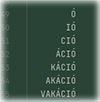
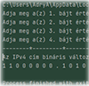
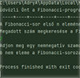
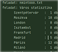
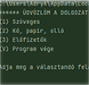

Munkáim
Az első félév elsősorban az alapok elsajátításáról szólt. E szemeszter folyamán főbb szakmai tantárgyaink a Webprogramozás , a Programozási alapismeretek , ill. a Hálózatok voltak. Webprogramozásból a HTML5/CSS3 alapú weblapkészítés fortélyaiba kóstolhattunk bele, míg a Programozási alapismeretek órákon a Python nyelv kapta a főszerepet, Hálózatok tantárgyból pedig az otthoni- és kisvállalati hálózatok kialakításának lépéseivel ismerkedhettünk meg a Cisco Packet Tracer rendszerben megalkotott szimulációk segítségével. Az alábbi táblázatokban némi ízelítő megtekintésére invitálom a kedves Olvasót, tárgyanként néhány feladat bemutatásán keresztül. Kellemes böngészést kívánok! 
Webprogramozás
| Feladat neve | Rövid leírás | Megtekintés |
|---|---|---|
| Kutya | HTML alapok, a legelső órai munka. Ehhez az oldalhoz még nem kapcsolódik CSS fájl. | Megtekintés |
| Édesség | Kitekintés a formázás és a stíluslapok használatába; tipikus szövegformázások | Megtekintés |
| Hivatkozások, formázások | Formázás: font és text, hivatkozások használata - gyakorlás | Megtekintés |
| Elefánt | DIV és a SPAN elem, box modell, keretek használata | Megtekintés |
| Utazók | Reszponzív oldal összeállítása képekkel, stíluslapok gyakorlása projektmunka keretében. Jómagam a kezdőlap elkészítését végeztem. | Megtekintés |
| Képgaléria | Reszponzív oldal készítése képekkel | Megtekintés |
| Kutyás feladat | Táblázatok készítése, formázása | Megtekintés |
| Oldalalakítás gridekkel | Ismerkedés a rácsszerkezet felépítésével, használatával | Megtekintés |
| Próbadolgozat | Egy kis ágazati vizsga-szimuláció :) | Megtekintés |
| Próbadolgozat másképp | Az "article" elem további gridekké alakításával kísérleteztem :) | Megtekintés |
| Sakkos oldal | Sakktábla elkészítése táblázat segítségével, valamind a gridek gyakorlása | Megtekintés |
Programozási alapismeretek
| Feladat neve | Rövid leírás | Letöltés |
|---|---|---|
| Vakáció | Emlékszel még, amikor a suliban a nyári szünetig hátralévő utolsó hét minden egyes reggelén a "Vakáció" szó egy-egy betűjét - a legutolsótól legelső felé haladva - egyre türelmetlenebbül a táblára véstétek? A szünidőre való várakozás izgalmának nosztalgikus hangulatát idézi fel eme egyszerű programocska. :) Ismerkedés a "for" ciklussal. | Letöltés |
| IPv4 | Te megadsz egy IPv4 címet decimális változatban, én pedig bináris formában kiírom Neked a képernyőre :). A program gerincét tehát a decimálisból binárissá alakítás algoritmusa képezi. | Letöltés |
| Fibonacci | A Fibonacci-számokról és sorozatról bővebben ezen a linken keresztül olvashatsz. A program pedig a Fibonacci-sorozat általad megadott első n elemét írja ki. Illetve egy szintén általad kigondolt számról megállapítja, hogy tagja-e a Fibonacci-sorozatnak | Letöltés |
| Épületek | A megoldás bemutatja, hogy a fájlkezelés és az objektumorientált programozás fúziója miféle csodákra képes! :D Sor kerül továbbá különféle lekérdezések megvalósítására is. A feladat teljes leírását mellékelve találod. | Letöltés |
| Félévzáró dolgozat | No, hát így fest a szemeszter legutolsó progalap-megmérettetése, mely a fájlkezelés, az objektumorientált programozás alapjai ill. a metóduskezelés témakörökre épül. Fincsi, ugye? :) | Letöltés |
Hálózatok
| Feladat neve | Rövid leírás | Letöltés |
|---|---|---|
| Alkalmazási réteg | Az OSI modell applikáció rétegbeli szolgáltatásainak konfigurálása (Web, DNS, E-mail, DHCP, FTP, TFTP) | Letöltés |
| SOHO hálózat | Alhálózatszámítást végzünk, majd a számítások alapján felépítünk és konfigurálunk egy SOHO hálózatot Wi-fi routerrel és Wi-fi laptoppal. A szolgáltatói oldalon ismét beállításra kerülnek a WEB, DNS és E-mail szerver szolgáltatások. | Letöltés |
| Serial kapcsolat és biztonsági beállítások | Ismételten alhálózatot számítunk, majd sor kerül a serial kapcsolat kialakítására, konfigurálására, ill. a hálózati eszközök biztonsági beállításaira. | Letöltés |
| Statikus- és dinamikus forgalomirányítás | Az első fájl a statikus, a második pedig a dinamikus forgalomirányítást modellezi. | Letöltés |
| Full Wi-fi hálózat SSH-val | A feladat a következőket mutatja be:
|
Letöltés |